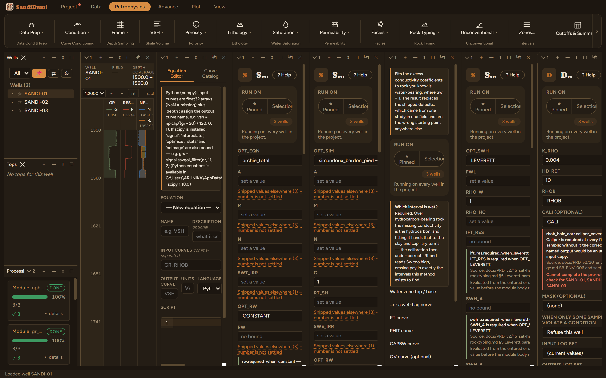

In a washout the density pad loses contact and reads too much mud, so the log reads light — the same direction as gas, which is why an uncorrected washout fakes a gas show. The correction restores density upward, linearly in the enlargement beyond a reference diameter: RHOB_EC = RHOB + K_RHO·(CALI − HD_REF) for CALI beyond HD_REF; within gauge the log passes through unchanged.
K_RHO 0.004 and HD_REF 10 in — shipped, tool-generic starting values; on a real study both come from the density tool's own correction chart. Like the GR correction, the run refuses if CALI is missing at any finite RHOB sample. And the standing caveat: beyond a few inches of washout no correction is trustworthy — that rock belongs to the BADHOLE mask, not to a bigger coefficient.

On these wells: 3 clean. The washout intervals here reach ~11 in plus, so the correction engages exactly there and nowhere else — in-gauge hole passes through untouched, and the correction-extent companions record which samples got the full correction, a partial one, or none.